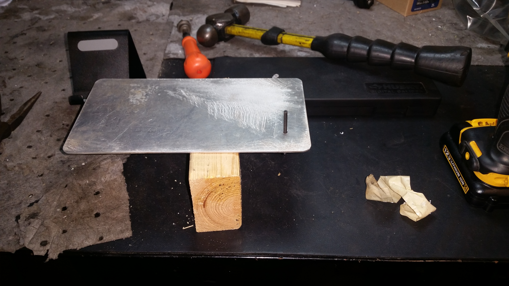
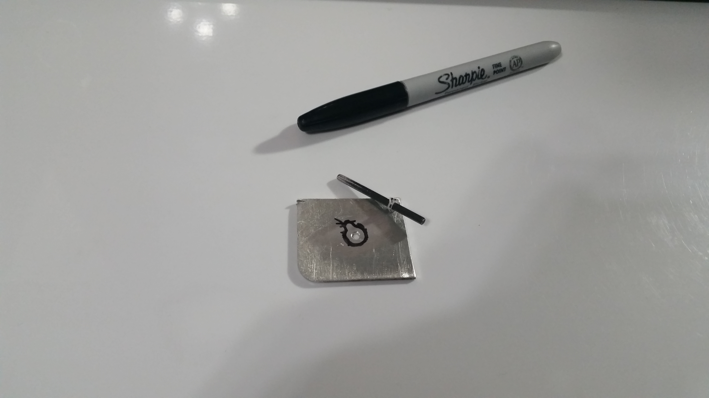
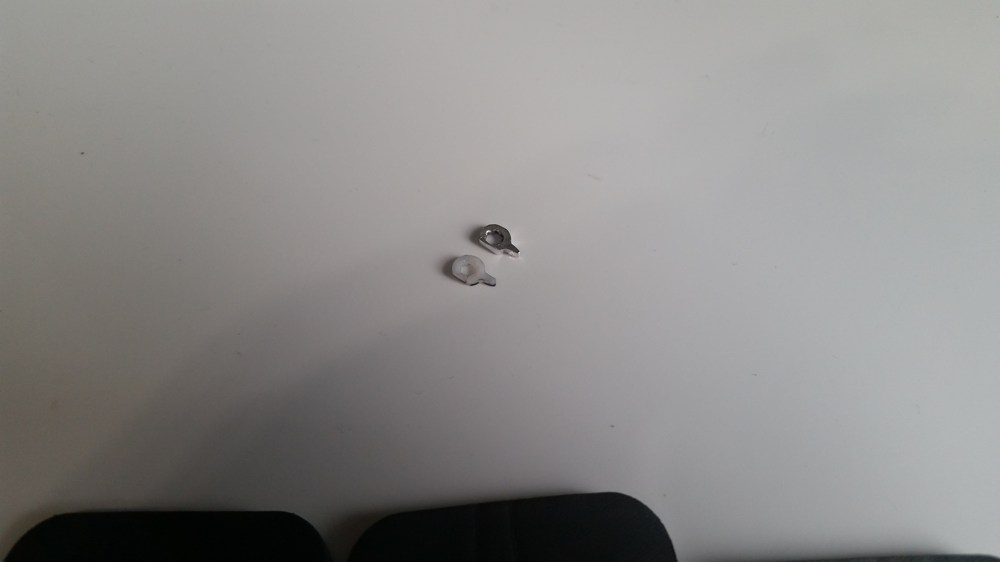
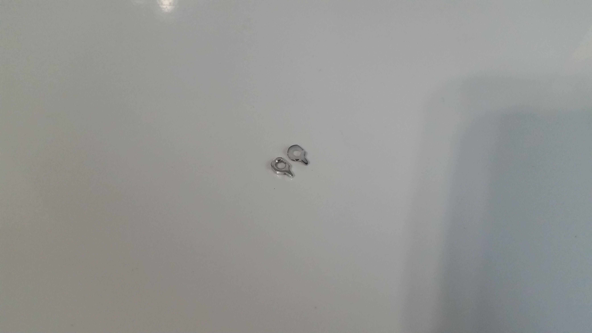
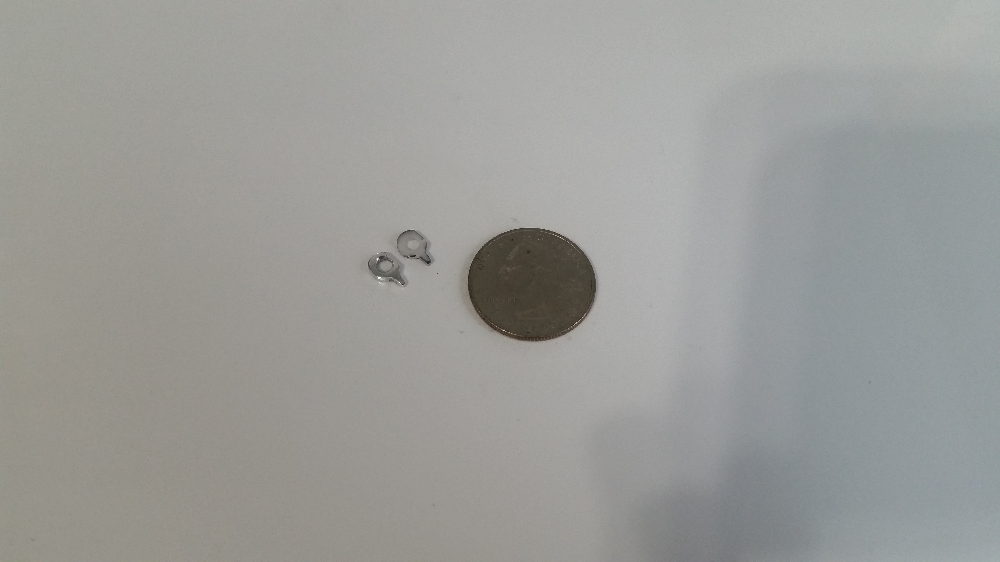
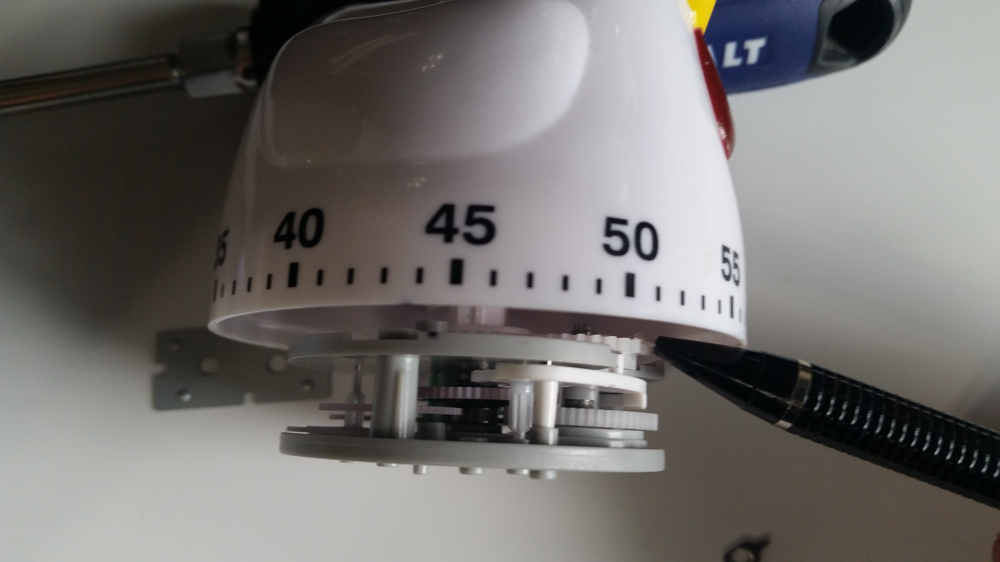
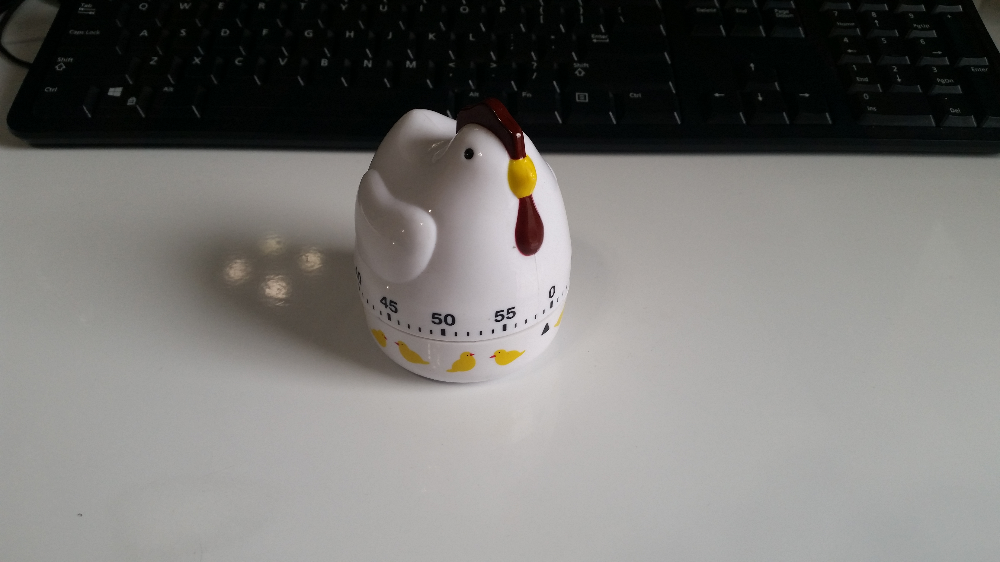

Oringinal, cracked part to replace. Note the inner hole is not circular, but rather hexagonal at approximately 7/64".
I decided to make a replacement part out of aluminum. My first problem was figuring out a way to drill a hexagonal hole. My solution to this was to attempt to make and use a homemade punch-through broach.

Here is an Allen key of the correct size, and a piece of scrap aluminum of appropriate thickness.

After cutting down the Allen key, I used a poorman's lathe to round off one end.

The finished broach.
A pilot hole was drilled, and then the broach punched through.

Success...
Marked out the shape of the part.

Cutting out part. Old part in picture for comparison.
Hand filed to shape. Old part in picture for comparison.
Polished because the part, when installed, will rest atop an independently moving gear. Old part in picture for comparison.
Quarter for scale.
The part gets installed on the shaft, just above the gear where the pencil tip is pointing. The part being replaced is a component in the system that winds up the spring that the ringer uses. Without this part the timer still works but the ringer does not ring.
And with the part installed, the ringer is functioning properly again and I can now add chicken timer to the list of things I have fixed.